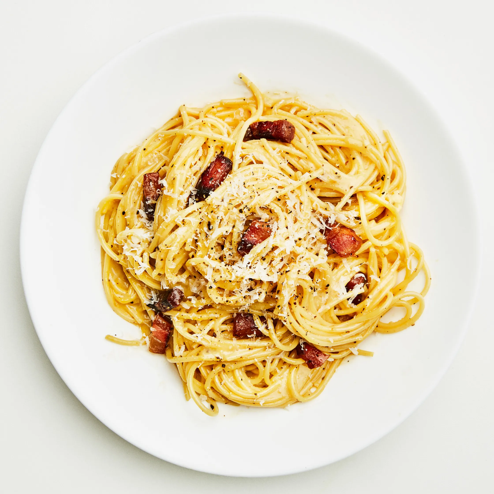

Simple Pasta Carbonara

With crispy bits of pork, a peppery bite, and a velvety cheese sauce enriched with eggs, carbonara is just
as easy to make for dinner as it is at 2 a.m. after a long night out. It’s one of Rome’s signature dishes,
and just like cacio e pepe and other pasta recipes in that class, its simplicity demands proper technique
and quality ingredients. Cured meat adds a salty depth to the dish, and while guanciale is the most
traditional choice, diced pancetta or bacon also work well. Egg yolks give the carbonara sauce its
luscious texture and golden hue, so pick up farm-fresh eggs if you can. And when it comes to the cheese
and pasta, this is the time to spend a little extra: Buy a wedge of Romano cheese or real Parmigiano
Reggiano and a nice box of spaghetti, bucatini, or rigatoni.
A word on technique: To achieve the creamy sauce’s signature sheen, adding the ingredients at just the
right time and temperature is key for any carbonara recipe. Whisking a quarter cup of hot pasta water
into the raw egg mixture and turning off the heat before adding it to the pasta helps bring everything
together into a glossy, emulsified sauce without overcooking the yolks. From there, toss everything
together quickly and add more pasta cooking water to thin the sauce as needed.
At dinner this pasta dish is nice served alongside a plate of greens, but when you’re in the throes of an
after-hours hang, just grab a fork.
Ingredients
4 servings
- 3Tbsp. kosher salt, plus more
- 4oz. guanciale (salt-cured pork jowl), pancetta (Italian bacon), or bacon
- 2oz. Parmesan or Pecorino Romano
- 4 large egg yolks
- 2 large eggs
- Freshly ground black pepper
- 2Tbsp. extra-virgin olive oil
- 1lb. spaghetti, bucatini, or rigatoni
Preparation
- Heat 6 qt. water in a large pot over high. When water starts to steam, add 3 Tbsp. salt and cover pot
with a lid (this will bring water to a boil faster).
- While you are waiting on the water, do a little prep. Remove 4 oz. guanciale from packaging and cut
into about 1x¼" strips. Finely grate 2 oz. cheese and set aside one-quarter of cheese for later.
- Whisk 4 egg yolks and 2 whole eggs in a medium bowl until no streaks remain, then stir in remaining
grated cheese. Add several cranks of pepper and set aside.
- Working next to pot, heat 2 Tbsp. oil in a large Dutch oven or other heavy pot over medium. Add
guanciale and cook, stirring occasionally, until crisp around the edges, 7–10 minutes.
- Remove pot from heat. Using a wooden spoon, fish out guanciale and transfer to a small bowl. Pour fat
into a heatproof measuring cup, then add back about 3 Tbsp. to pot. Discard any remaining fat.
- Cook 1 lb. pasta in boiling water, stirring occasionally, 2 minutes shy of package instructions. Just
before pasta is finished, scoop out 1¾ cups pasta cooking liquid with same heatproof measuring cup.
- Add 1 cup reserved pasta cooking liquid to Dutch oven and bring to a boil over medium-high. Drain
pasta in a colander, then transfer to Dutch oven.
- Cook pasta, stirring constantly and vigorously, until al dente and water is reduced by about half, about 2
minutes. Remove pot from heat.
- Whisk ¼ cup reserved pasta water into egg mixture, then very slowly stream into Dutch oven, stirring
constantly, until cheese is melted and egg is thickened to form a glossy sauce. Season with salt, if
needed. Thin sauce with remaining ½ cup pasta cooking liquid, adding a tablespoonful at a time, until
it's the consistency of heavy cream (you most likely won’t use all of it).
- Mix in guanciale and divide pasta among bowls. Top with pepper and reserved cheese.